Build a visual identity
Create a recognizable brand that feels personal, welcoming, and professional.
Web design · UX research · Responsive prototype
A clearer, more welcoming way to explore piercing services and book an appointment.
Explore the processPierced
by Taz
A little sparkle, a lot of care.The overview
Many customers have questions before getting a piercing: Is the piercer trustworthy? Which piercings are available? How much will it cost? What jewelry can they choose from? I wanted to bring those answers together in one easy-to-use experience that reflects Pierced by Taz’s personality and aesthetic.
Pierced by Taz is a self-owned piercing business started by a friend of mine after she became a licensed Hollow Needle Piercer.
01 / Goals
Create a recognizable brand that feels personal, welcoming, and professional.
Make it easier for customers to understand the steps and request an appointment.
Organize services, pricing, and helpful details so visitors know where to look.
Keep the experience responsive and comfortable to use on smaller screens.
02 / Audience
The primary audience includes people researching their first piercing who need reassurance and clear guidance, along with experienced clients looking for specific services, jewelry, or pricing information.
03 / Research
I reviewed competitor websites to see how they organized locations, services, and booking information. I looked for patterns that were useful and noted places where the experience could be clearer.
The landing page leads visitors toward a map of locations. That is useful for finding a nearby studio, but it can push other important information farther down the journey.
The main page was not always an obvious route to more details, and the “Pierce” tab led to a separate page with additional information. I wanted my design to make those paths more straightforward.
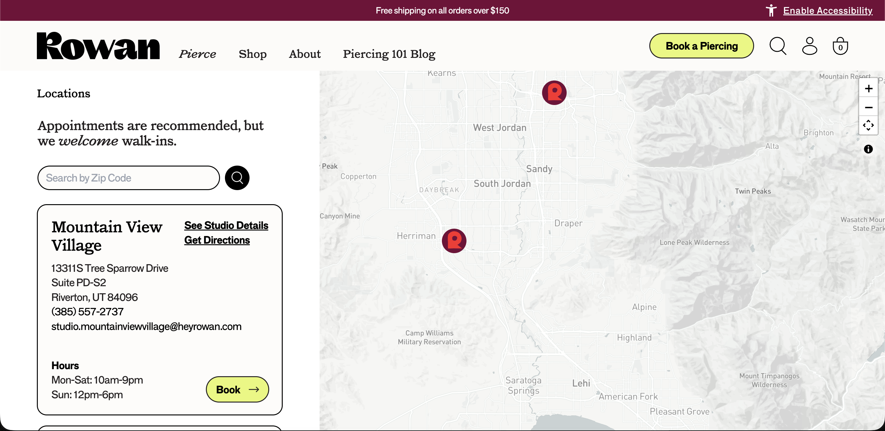
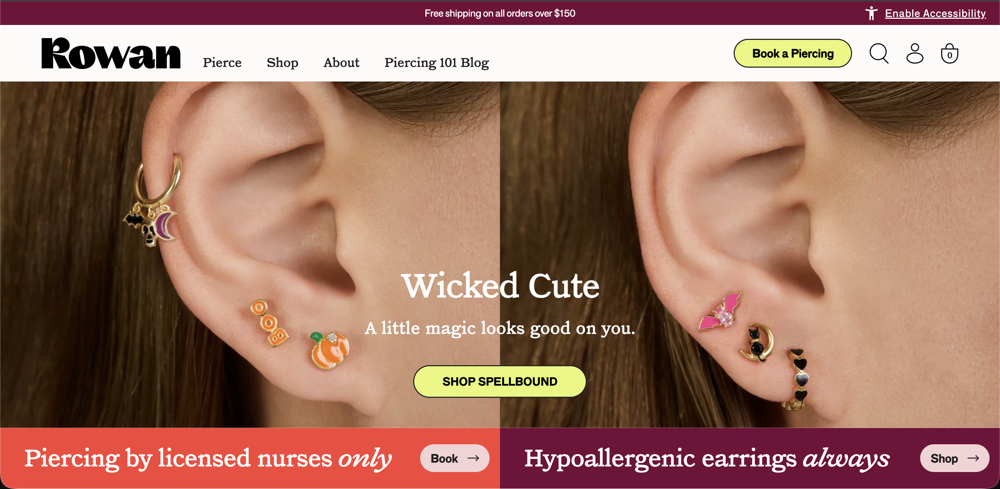
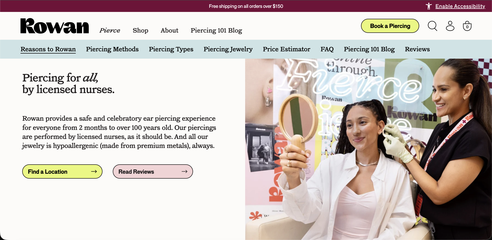
Groovy Peach also directs visitors to a map early in the experience. Its home page and logo provide a simpler way to return to the main page.
From this review, I took away the importance of clear navigation and a visible route back home, while looking for ways to bring service details and booking information closer together.
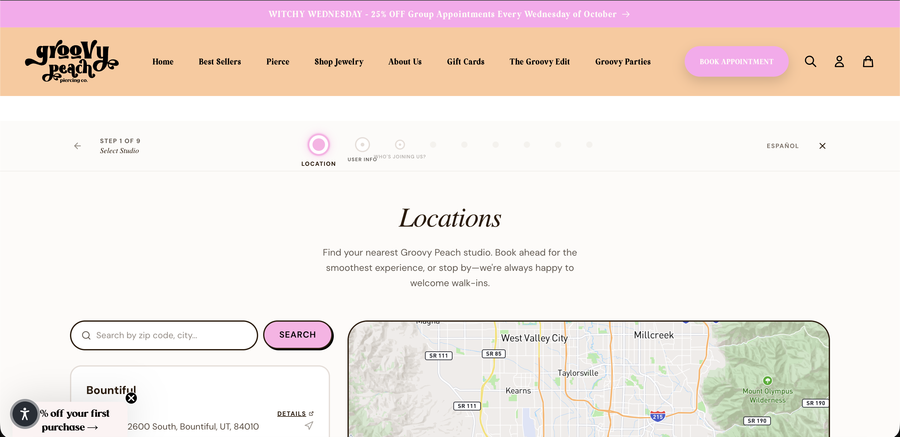
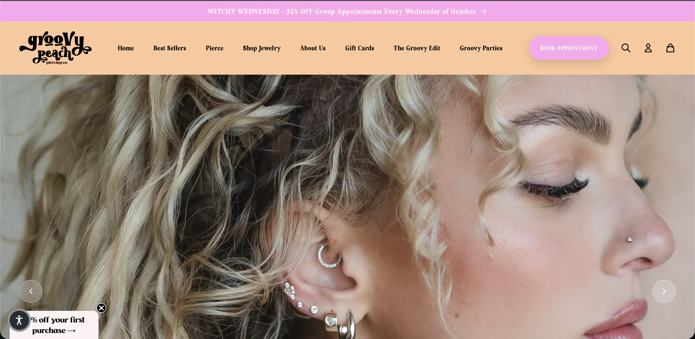
04 / Process
After reviewing competitor sites, I sketched wireframes around the content and tasks customers would need most: learning about the studio, browsing services, and booking an appointment.
I mapped out the main page, services page, contact page, and booking page before committing to colors or imagery. This helped me focus on page structure and the flow between sections.
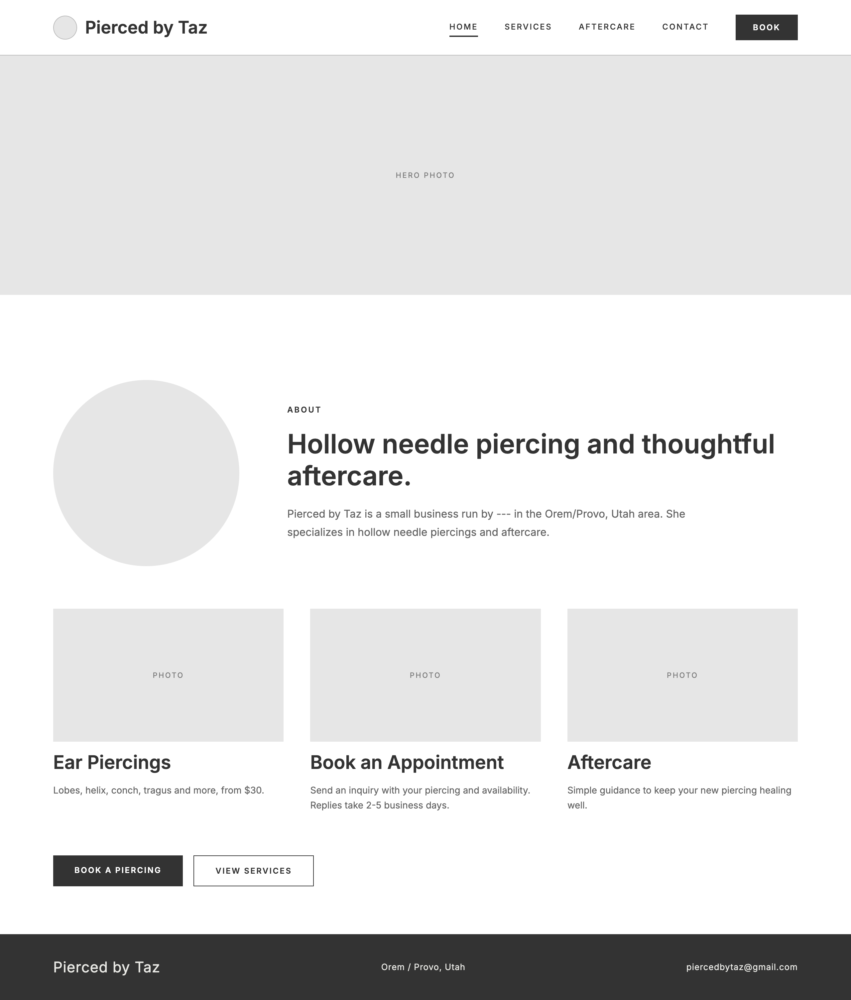
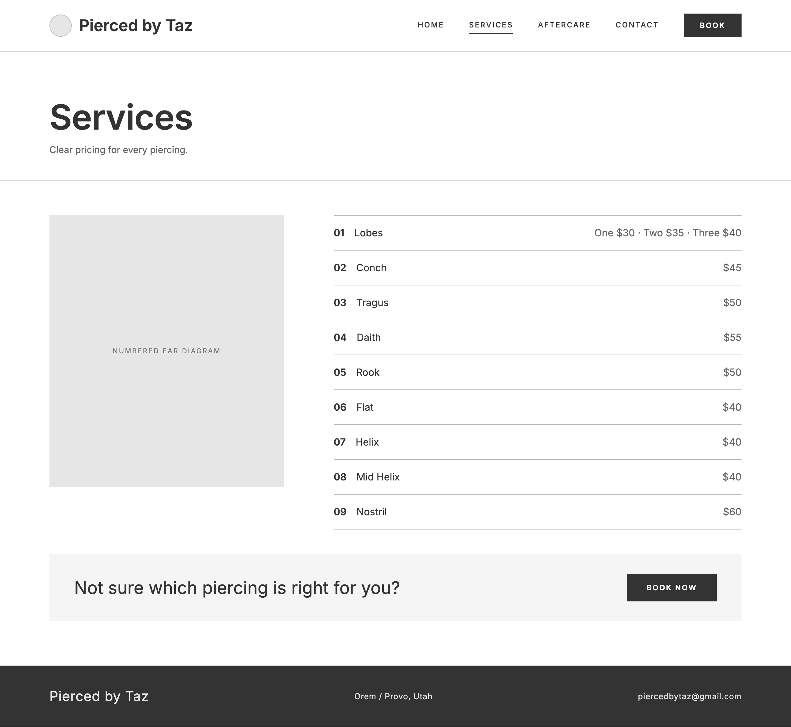
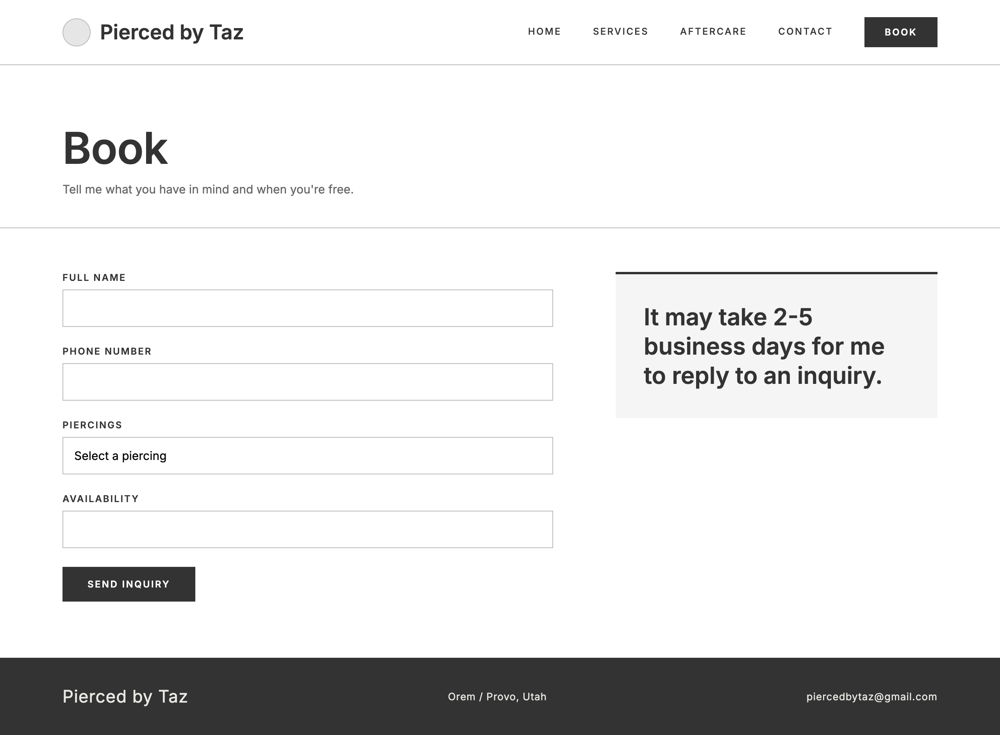
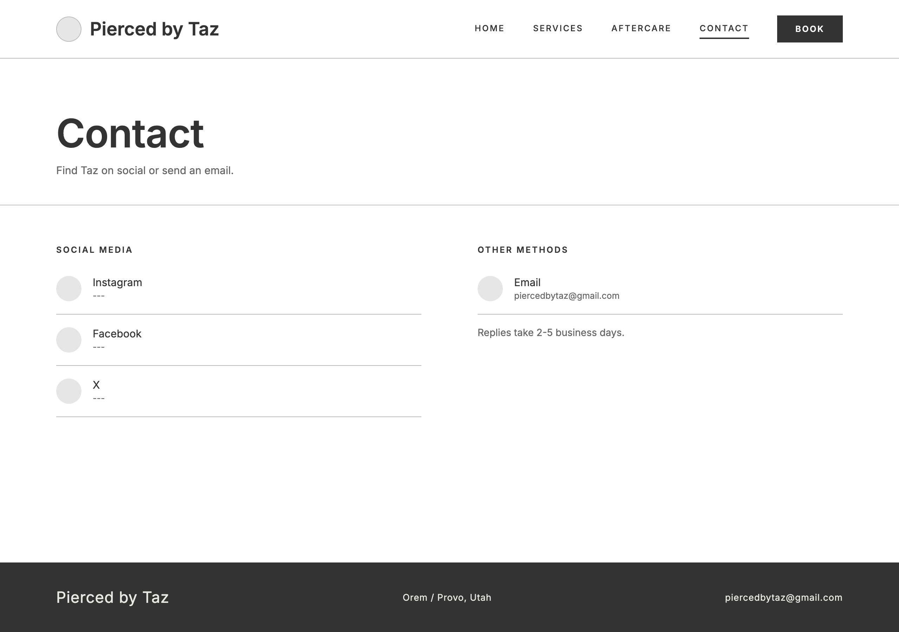
Once the wireframes were approved by the owner, I created surface comps for each page. I used a warm, simple palette and consistent visual elements to make the site feel connected to the Pierced by Taz brand.
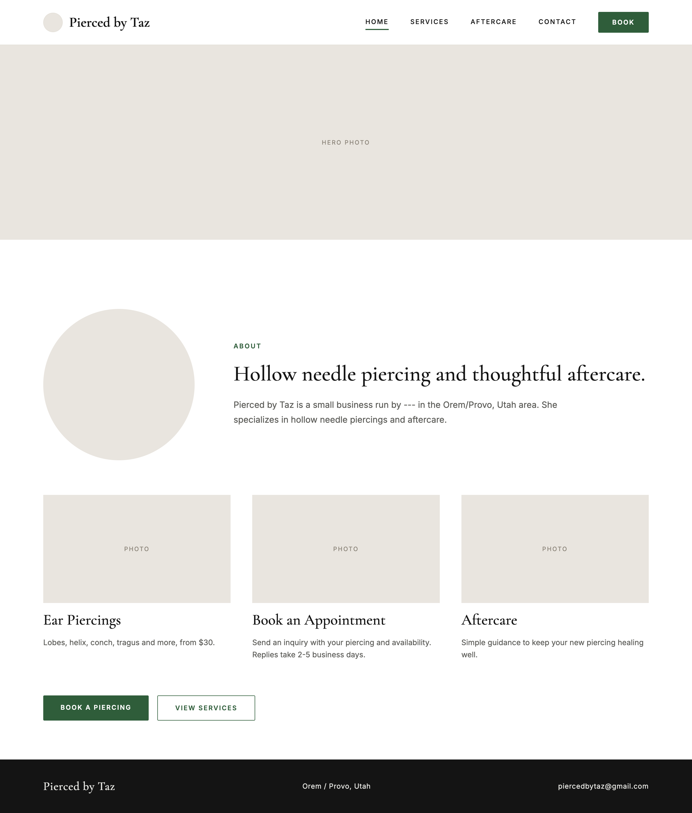
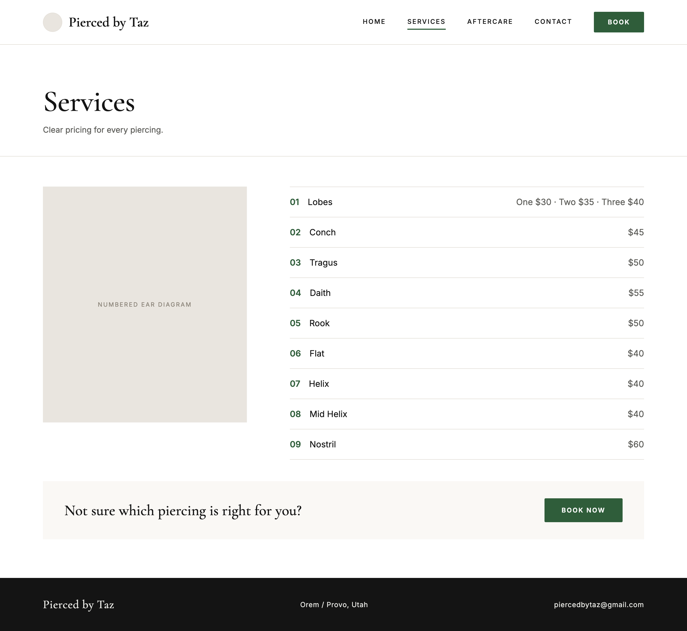
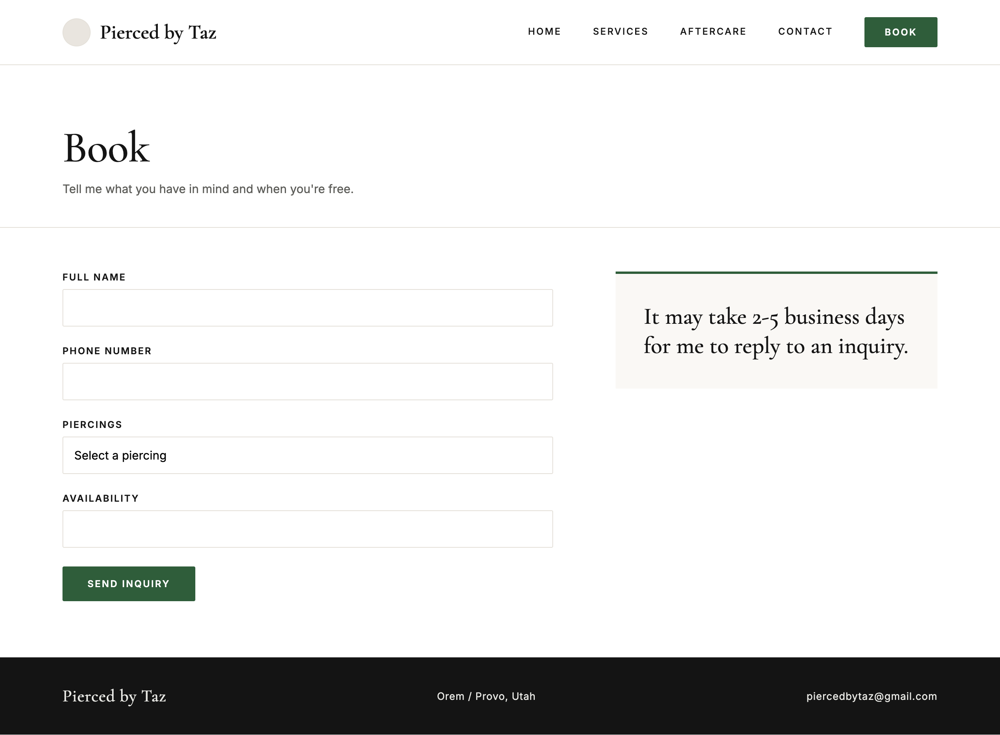
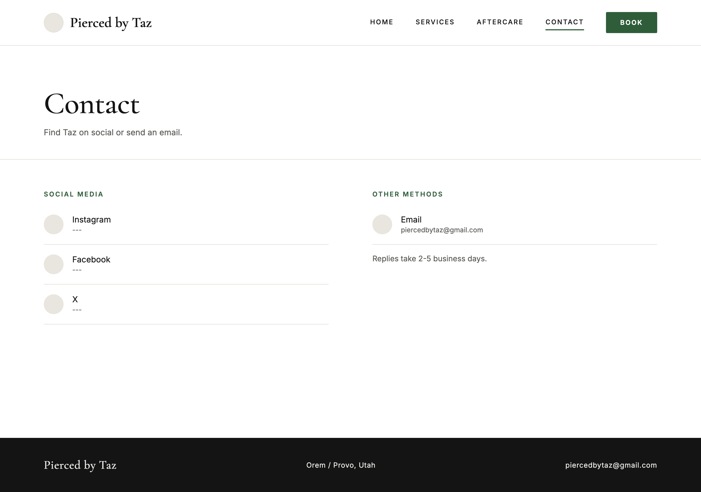
I created a responsive prototype for the owner to review, making sure the overall design and page structure reflected her preferences and the goals we set for the experience.
05 / Reflection
This project taught me a lot about working with a small business owner and balancing personal style with usability. I learned that a design needs to do more than look good: it should make information easy to find and help customers feel confident about what to do next.
Working through research, wireframes, and visual comps also showed me how each stage supports the next. The feedback process helped me create a direction that felt more official while still reflecting the owner’s brand.
Back to top ↑